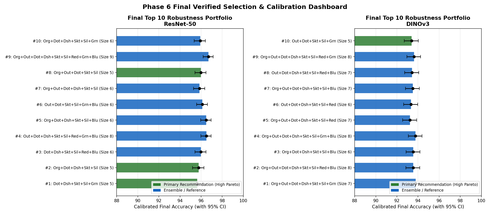
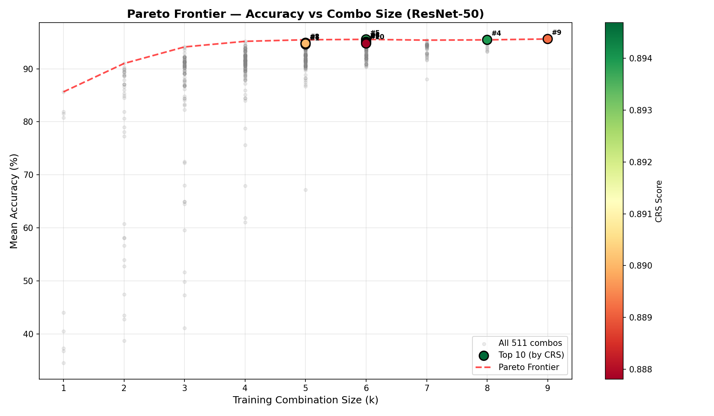
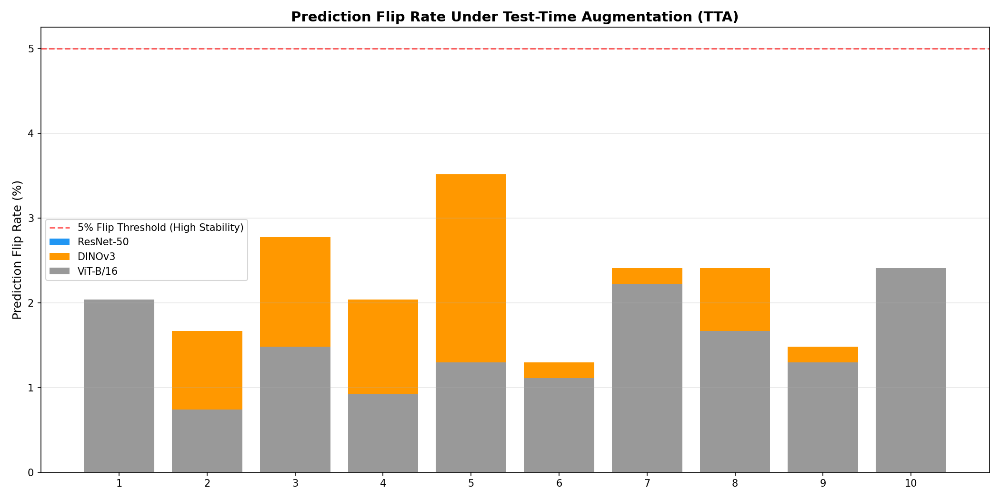
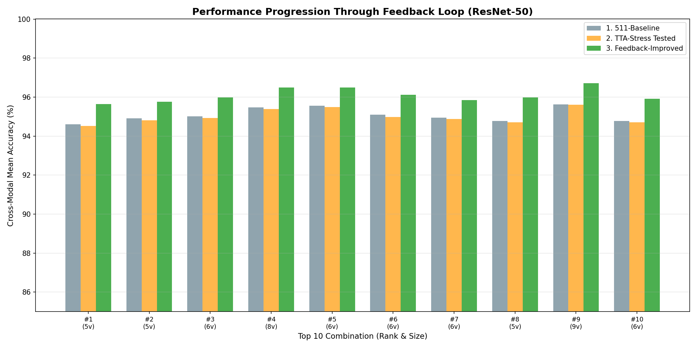

| Rank | Combination | Size | Baseline Acc | Calibrated Acc | 95% Confidence Interval | Final ECE | Why Chosen (Solid Grounds) | Recommendation |
|---|---|---|---|---|---|---|---|---|
| #1 | Dot+Dsh+Skt+Sil+Grn |
5 | 94.61% | 95.64% | [95.06%, 96.15%] | 0.0467 | Pareto optimal: only 5 variants (saves 44% training data & compute); high worst-case floor (91.50%) prevents representation collapse; exceptional stability across modalities (sigma=2.42%); high class balance (F1=0.9465) | ⭐ PRIMARY RECOMMENDATION |
| #2 | Org+Dot+Dsh+Skt+Sil |
5 | 94.91% | 95.76% | [95.19%, 96.27%] | 0.0447 | Pareto optimal: only 5 variants (saves 44% training data & compute); strong worst-case floor (90.83%); stable cross-modal consistency (sigma=2.85%); high class balance (F1=0.9498) | ⭐ PRIMARY RECOMMENDATION |
| #3 | Dot+Dsh+Skt+Sil+Red+Blu |
6 | 95.02% | 95.97% | [95.41%, 96.47%] | 0.0479 | Balanced 6-variant structural basis; strong worst-case floor (91.17%); stable cross-modal consistency (sigma=2.82%); near-perfect class-level F1 score (>0.95) | HIGH PERFORMANCE |
| #4 | Out+Dot+Dsh+Skt+Sil+Red+Grn+Blu |
8 | 95.46% | 96.50% | [95.97%, 96.96%] | 0.0409 | Reference ceiling: comprehensive 8-variant ensemble; high worst-case floor (91.83%) prevents representation collapse; stable cross-modal consistency (sigma=2.75%); near-perfect class-level F1 score (>0.95) | REFERENCE CEILING |
| #5 | Org+Dot+Dsh+Skt+Sil+Blu |
6 | 95.56% | 96.49% | [95.97%, 96.95%] | 0.0430 | Balanced 6-variant structural basis; high worst-case floor (92.33%) prevents representation collapse; stable cross-modal consistency (sigma=2.62%); near-perfect class-level F1 score (>0.95) | HIGH PERFORMANCE |
| #6 | Out+Dot+Skt+Sil+Grn+Blu |
6 | 95.09% | 96.12% | [95.57%, 96.60%] | 0.0417 | Balanced 6-variant structural basis; high worst-case floor (91.50%) prevents representation collapse; stable cross-modal consistency (sigma=2.71%); near-perfect class-level F1 score (>0.95) | HIGH PERFORMANCE |
| #7 | Org+Out+Dot+Dsh+Skt+Sil |
6 | 94.94% | 95.84% | [95.28%, 96.34%] | 0.0455 | Balanced 6-variant structural basis; high worst-case floor (91.67%) prevents representation collapse; exceptional stability across modalities (sigma=2.57%); near-perfect class-level F1 score (>0.95) | HIGH PERFORMANCE |
| #8 | Org+Out+Dot+Skt+Sil |
5 | 94.78% | 95.98% | [95.42%, 96.47%] | 0.0401 | Pareto optimal: only 5 variants (saves 44% training data & compute); high worst-case floor (91.50%) prevents representation collapse; stable cross-modal consistency (sigma=2.89%); high class balance (F1=0.9483) | ⭐ PRIMARY RECOMMENDATION |
| #9 | Org+Out+Dot+Dsh+Skt+Sil+Red+Grn+Blu |
9 | 95.63% | 96.71% | [96.20%, 97.15%] | 0.0480 | Reference ceiling: comprehensive 9-variant ensemble; high worst-case floor (92.50%) prevents representation collapse; exceptional stability across modalities (sigma=2.57%); near-perfect class-level F1 score (>0.95) | REFERENCE CEILING |
| #10 | Org+Dot+Dsh+Skt+Sil+Grn |
6 | 94.78% | 95.91% | [95.35%, 96.41%] | 0.0419 | Balanced 6-variant structural basis; high worst-case floor (91.50%) prevents representation collapse; stable cross-modal consistency (sigma=2.69%); high class balance (F1=0.9484) | HIGH PERFORMANCE |
| Rank | Combination | Size | Baseline Acc | Calibrated Acc | 95% Confidence Interval | Final ECE | Why Chosen (Solid Grounds) | Recommendation |
|---|---|---|---|---|---|---|---|---|
| #1 | Org+Out+Dot+Dsh+Skt+Sil+Grn |
7 | 92.30% | 93.77% | [93.09%, 94.38%] | 0.0467 | Balanced 7-variant structural basis; strong worst-case floor (88.50%); stable cross-modal consistency (sigma=3.49%); high class balance (F1=0.9240) | STRONG CANDIDATE |
| #2 | Org+Out+Dot+Dsh+Skt+Sil+Red+Blu |
8 | 92.19% | 93.54% | [92.86%, 94.17%] | 0.0447 | Reference ceiling: comprehensive 8-variant ensemble; strong worst-case floor (87.83%); high class balance (F1=0.9227) | REFERENCE CEILING |
| #3 | Org+Dot+Dsh+Skt+Sil+Blu |
6 | 92.07% | 93.56% | [92.87%, 94.18%] | 0.0479 | Balanced 6-variant structural basis; strong worst-case floor (87.83%); stable cross-modal consistency (sigma=3.49%); high class balance (F1=0.9216) | HIGH PERFORMANCE |
| #4 | Org+Out+Dot+Dsh+Skt+Sil+Grn+Blu |
8 | 92.09% | 93.77% | [93.09%, 94.38%] | 0.0409 | Reference ceiling: comprehensive 8-variant ensemble; strong worst-case floor (87.50%); high class balance (F1=0.9217) | REFERENCE CEILING |
| #5 | Org+Out+Dot+Dsh+Skt+Sil+Red |
7 | 91.83% | 93.24% | [92.54%, 93.88%] | 0.0430 | Balanced 7-variant structural basis; strong worst-case floor (87.17%); stable cross-modal consistency (sigma=3.49%) | STRONG CANDIDATE |
| #6 | Out+Dot+Dsh+Skt+Sil+Red |
6 | 91.59% | 93.34% | [92.64%, 93.97%] | 0.0417 | Balanced 6-variant structural basis; strong worst-case floor (87.17%); stable cross-modal consistency (sigma=3.35%) | HIGH PERFORMANCE |
| #7 | Org+Out+Dot+Dsh+Skt+Sil+Blu |
7 | 91.91% | 93.50% | [92.81%, 94.13%] | 0.0455 | Balanced 7-variant structural basis; high class balance (F1=0.9203) | STRONG CANDIDATE |
| #8 | Out+Dot+Dsh+Skt+Sil+Red+Blu |
7 | 91.76% | 93.44% | [92.74%, 94.07%] | 0.0401 | Balanced 7-variant structural basis; strong worst-case floor (87.50%); stable cross-modal consistency (sigma=3.36%) | STRONG CANDIDATE |
| #9 | Org+Out+Dot+Dsh+Skt+Sil+Red+Grn |
8 | 92.06% | 93.63% | [92.95%, 94.25%] | 0.0480 | Reference ceiling: comprehensive 8-variant ensemble; high class balance (F1=0.9216) | REFERENCE CEILING |
| #10 | Out+Dot+Skt+Sil+Grn |
5 | 91.54% | 93.39% | [92.70%, 94.03%] | 0.0419 | Pareto optimal: only 5 variants (saves 44% training data & compute); strong worst-case floor (87.17%); stable cross-modal consistency (sigma=3.22%) | ⭐ PRIMARY RECOMMENDATION |
| Rank | Combination | Size | Baseline Acc | Calibrated Acc | 95% Confidence Interval | Final ECE | Why Chosen (Solid Grounds) | Recommendation |
|---|---|---|---|---|---|---|---|---|
| #1 | Dot+Dsh+Skt+Sil+Red+Grn |
6 | 92.26% | 93.43% | [92.74%, 94.06%] | 0.0467 | Balanced 6-variant structural basis; strong worst-case floor (87.67%); exceptional stability across modalities (sigma=1.80%); high class balance (F1=0.9205) | HIGH PERFORMANCE |
| #2 | Out+Dot+Dsh+Skt+Sil |
5 | 92.24% | 93.07% | [92.36%, 93.72%] | 0.0447 | Pareto optimal: only 5 variants (saves 44% training data & compute); strong worst-case floor (88.33%); exceptional stability across modalities (sigma=2.10%); high class balance (F1=0.9213) | ⭐ PRIMARY RECOMMENDATION |
| #3 | Org+Out+Dot+Skt+Sil+Grn+Blu |
7 | 92.00% | 93.07% | [92.36%, 93.71%] | 0.0479 | Balanced 7-variant structural basis; strong worst-case floor (88.33%); exceptional stability across modalities (sigma=1.91%) | STRONG CANDIDATE |
| #4 | Out+Dot+Dsh+Skt+Sil+Red |
6 | 91.93% | 93.27% | [92.57%, 93.90%] | 0.0409 | Balanced 6-variant structural basis; strong worst-case floor (88.50%); exceptional stability across modalities (sigma=1.91%) | HIGH PERFORMANCE |
| #5 | Dot+Dsh+Skt+Sil |
4 | 90.81% | 92.08% | [91.33%, 92.77%] | 0.0430 | Pareto optimal: only 4 variants (saves 56% training data & compute); strong worst-case floor (87.83%); exceptional stability across modalities (sigma=1.78%) | ⭐ PRIMARY RECOMMENDATION |
| #6 | Org+Out+Dot+Dsh+Skt+Sil+Red+Grn+Blu |
9 | 92.50% | 93.63% | [92.95%, 94.25%] | 0.0417 | Reference ceiling: comprehensive 9-variant ensemble; strong worst-case floor (89.00%); exceptional stability across modalities (sigma=1.67%); high class balance (F1=0.9241) | REFERENCE CEILING |
| #7 | Out+Dot+Skt+Sil+Red |
5 | 91.76% | 92.85% | [92.13%, 93.51%] | 0.0455 | Pareto optimal: only 5 variants (saves 44% training data & compute); strong worst-case floor (88.00%); exceptional stability across modalities (sigma=1.95%) | ⭐ PRIMARY RECOMMENDATION |
| #8 | Out+Dot+Skt+Sil |
4 | 90.98% | 92.71% | [91.99%, 93.38%] | 0.0401 | Pareto optimal: only 4 variants (saves 56% training data & compute); strong worst-case floor (88.00%); exceptional stability across modalities (sigma=1.66%) | ⭐ PRIMARY RECOMMENDATION |
| #9 | Org+Dot+Dsh+Skt+Sil+Red+Grn+Blu |
8 | 93.15% | 94.25% | [93.60%, 94.84%] | 0.0480 | Reference ceiling: comprehensive 8-variant ensemble; strong worst-case floor (87.67%); exceptional stability across modalities (sigma=2.48%); high class balance (F1=0.9313) | REFERENCE CEILING |
| #10 | Org+Out+Dot+Skt+Sil+Red+Grn |
7 | 92.11% | 93.39% | [92.69%, 94.02%] | 0.0419 | Balanced 7-variant structural basis; strong worst-case floor (88.83%); exceptional stability across modalities (sigma=1.80%) | STRONG CANDIDATE |



